DYNASTY / REALM REMASTER 04 · 2026-09-24山河重构，百炼成锋
建筑生成修复、四境原创地层、异形轮廓与流派兵器补全。下方角色与建筑图由 Minecraft 客户端真实模型渲染；地块是平铺贴图预览，不冒充游戏地形截图。
建筑和地层的生成修复只作用于新生成区块。不会删除旧存档；已存在的半栋建筑不会自动重建。地形起伏算法本轮保留，替换的是专属地表与岩层。
01 / 楼梯可通，建筑完整
修复坐标误用引起的高柱、楼梯朝向和出口栏杆。星坛从 26×26 扩为 42×42，新增藏书廊、水庭与钟亭。建筑生成更疏，皇宫、书院和关隘加入主世界适宜群系。
02 / 不止方块人
保留王朝题材，加入塔盾、层叠重甲、翼刃、悬浮面具、魂袍与分节水族尾巴；这是游戏内可用模型，不是概念画。常规士兵仍保留人形，年兽等现有兽型保留。
03 / 四境原生地层
天朝玉岩与灵玉沃土、幽冥岩与幽魂土、九霄云岩与星砂地、潮纹岩与珍珠砂。均为本轮原创纹理；实际区块生成已测试。入境标题补齐正确翻译键。
天朝玉岩幽冥岩九霄云岩龙宫潮纹岩灵玉沃土幽魂土星砂地珍珠砂
04 / 兵器与被动分支
新增北辰破阵枪、承影剑、风翎弓、雷符杖；每件都有配方、被动效果、流派归属和后续进化。锻造保留等级与附魔。已重制的旧精品素材不重复覆盖，饰品节点独立放在流派页上方。
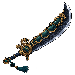
玄武盾刀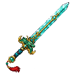
龙晶剑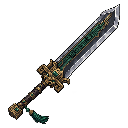
巨阙重剑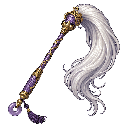
太乙拂尘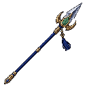
北辰破阵枪承影剑雷符杖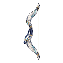
风翎弓混元珠杖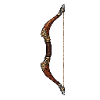
神臂弓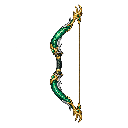
龙吟弓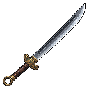
唐刀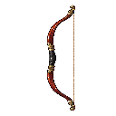
长弓查看独立拉弦帧
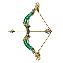
dragon_bow_pulling_0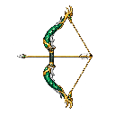
dragon_bow_pulling_1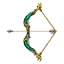
dragon_bow_pulling_2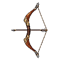
shenbi_bow_pulling_0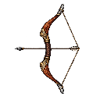
shenbi_bow_pulling_1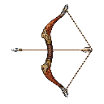
shenbi_bow_pulling_2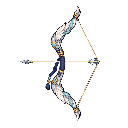
fengling_bow_pulling_0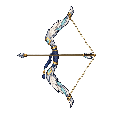
fengling_bow_pulling_1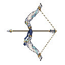
fengling_bow_pulling_2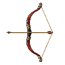
chang_gong_pulling_0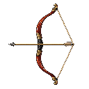
chang_gong_pulling_1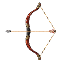
chang_gong_pulling_205 / 更清楚的提示
饰品属性每行一条。名称统一为「自然指南针」「探险者指南针」；匹配检查支持 zhinan、zhinanzhen、znz。山河录同步展示新分支配方。
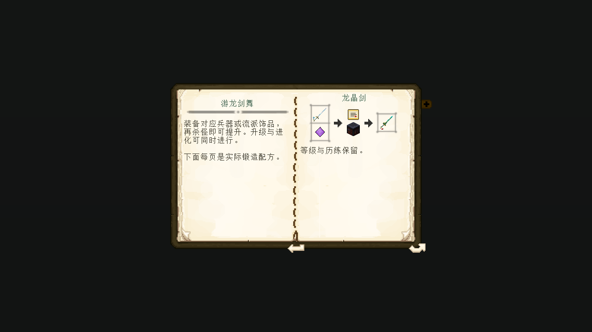
地层原创素材记录 · 兵器生成提示词 · 角色纹理生成记录